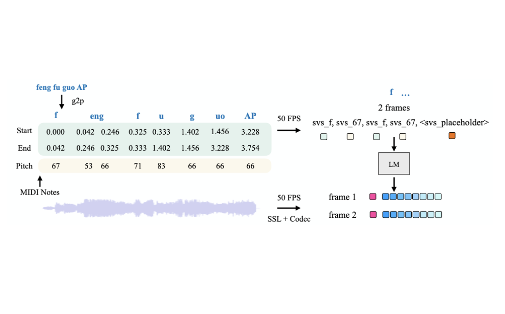
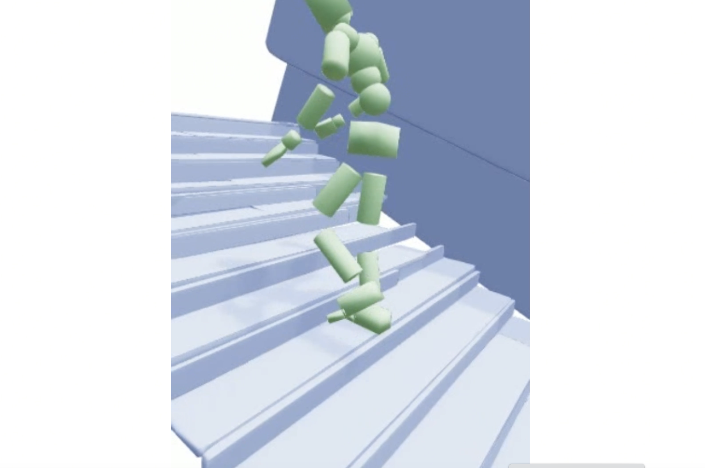

Projects/Publications
Recent Update: 2025-10-2
Projects

Fine-tune a motion generative model through human feedback.

Video-based human mesh recovery.
Conference Papers

FreeDance: Towards Harmonic Free-Number Group Dance Generation via a Unified Framework

Robust Training of Singing Voice Synthesis Using Prior and Posterior Uncertainty


Exploring Locomotion Methods with Upright Redirected Views for VR Users in Reclining & Lying Positions
[UIST 2023]Oral |
paper
Workshop Papers

Adapting Speech Language Model to Singing Voice Synthesis

Fashion Chatroom: An Automated Pipeline for Fashion Dataset Construction
[AAAIW 2024 AI4CSE] | paper
Underreview Papers

CRISP: Contact-guided Real2Sim from Monocular Video with Planar Scene Primitives
in submission